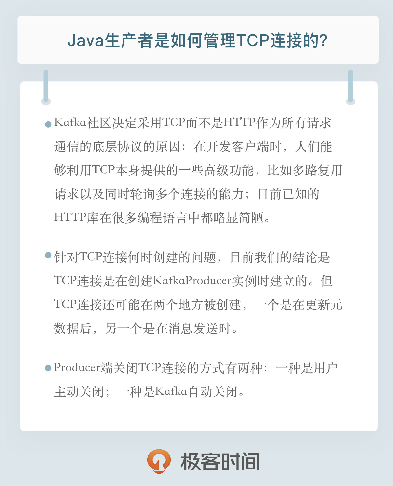

- 00 开篇词 为什么要学习Kafka？.md.html
- 01 消息引擎系统ABC.md.html
- 02 一篇文章带你快速搞定Kafka术语.md.html
- 03 Kafka只是消息引擎系统吗？.md.html
- 04 我应该选择哪种Kafka？.md.html
- 05 聊聊Kafka的版本号.md.html
- 06 Kafka线上集群部署方案怎么做？.md.html
- 07 最最最重要的集群参数配置（上）.md.html
- 08 最最最重要的集群参数配置（下）.md.html
- 09 生产者消息分区机制原理剖析.md.html
- 10 生产者压缩算法面面观.md.html
- 11 无消息丢失配置怎么实现？.md.html
- 12 客户端都有哪些不常见但是很高级的功能？.md.html
- 13 Java生产者是如何管理TCP连接的？.md.html
- 14 幂等生产者和事务生产者是一回事吗？.md.html
- 15 消费者组到底是什么？.md.html
- 16 揭开神秘的“位移主题”面纱.md.html
- 17 消费者组重平衡能避免吗？.md.html
- 18 Kafka中位移提交那些事儿.md.html
- 19 CommitFailedException异常怎么处理？.md.html
- 20 多线程开发消费者实例.md.html
- 21 Java 消费者是如何管理TCP连接的_.md.html
- 22 消费者组消费进度监控都怎么实现？.md.html
- 23 Kafka副本机制详解.md.html
- 24 请求是怎么被处理的？.md.html
- 25 消费者组重平衡全流程解析.md.html
- 26 你一定不能错过的Kafka控制器.md.html
- 27 关于高水位和Leader Epoch的讨论.md.html
- 28 主题管理知多少_.md.html
- 29 Kafka动态配置了解下？.md.html
- 30 怎么重设消费者组位移？.md.html
- 31 常见工具脚本大汇总.md.html
- 32 KafkaAdminClient：Kafka的运维利器.md.html
- 33 Kafka认证机制用哪家？.md.html
- 34 云环境下的授权该怎么做？.md.html
- 35 跨集群备份解决方案MirrorMaker.md.html
- 36 你应该怎么监控Kafka？.md.html
- 37 主流的Kafka监控框架.md.html
- 38 调优Kafka，你做到了吗？.md.html
- 39 从0搭建基于Kafka的企业级实时日志流处理平台.md.html
- 40 Kafka Streams与其他流处理平台的差异在哪里？.md.html
- 41 Kafka Streams DSL开发实例.md.html
- 42 Kafka Streams在金融领域的应用.md.html
- 加餐 搭建开发环境、阅读源码方法、经典学习资料大揭秘.md.html
- 用户故事 黄云：行百里者半九十.md.html
- 结束语 以梦为马，莫负韶华！.md.html
- 捐赠
13 Java生产者是如何管理TCP连接的？
13 Java生产者是如何管理TCP连接的？
你好，我是胡夕。今天我要和你分享的主题是：Kafka的Java生产者是如何管理TCP连接的。
为何采用TCP？
Apache Kafka的所有通信都是基于TCP的，而不是基于HTTP或其他协议。无论是生产者、消费者，还是Broker之间的通信都是如此。你可能会问，为什么Kafka不使用HTTP作为底层的通信协议呢？其实这里面的原因有很多，但最主要的原因在于TCP和HTTP之间的区别。
从社区的角度来看，在开发客户端时，人们能够利用TCP本身提供的一些高级功能，比如多路复用请求以及同时轮询多个连接的能力。
所谓的多路复用请求，即multiplexing request，是指将两个或多个数据流合并到底层单一物理连接中的过程。TCP的多路复用请求会在一条物理连接上创建若干个虚拟连接，每个虚拟连接负责流转各自对应的数据流。其实严格来说，TCP并不能多路复用，它只是提供可靠的消息交付语义保证，比如自动重传丢失的报文。
更严谨地说，作为一个基于报文的协议，TCP能够被用于多路复用连接场景的前提是，上层的应用协议（比如HTTP）允许发送多条消息。不过，我们今天并不是要详细讨论TCP原理，因此你只需要知道这是社区采用TCP的理由之一就行了。
除了TCP提供的这些高级功能有可能被Kafka客户端的开发人员使用之外，社区还发现，目前已知的HTTP库在很多编程语言中都略显简陋。
基于这两个原因，Kafka社区决定采用TCP协议作为所有请求通信的底层协议。
Kafka生产者程序概览
Kafka的Java生产者API主要的对象就是KafkaProducer。通常我们开发一个生产者的步骤有4步。
第1步：构造生产者对象所需的参数对象。
第2步：利用第1步的参数对象，创建KafkaProducer对象实例。
第3步：使用KafkaProducer的send方法发送消息。
第4步：调用KafkaProducer的close方法关闭生产者并释放各种系统资源。
上面这4步写成Java代码的话大概是这个样子：
Properties props = new Properties ();
props.put(“参数1”, “参数1的值”)；
props.put(“参数2”, “参数2的值”)；
……
try (Producer<String, String> producer = new KafkaProducer<>(props)) {
producer.send(new ProducerRecord<String, String>(……), callback);
……
}
这段代码使用了Java 7 提供的try-with-resource特性，所以并没有显式调用producer.close()方法。无论是否显式调用close方法，所有生产者程序大致都是这个路数。
现在问题来了，当我们开发一个Producer应用时，生产者会向Kafka集群中指定的主题（Topic）发送消息，这必然涉及与Kafka Broker创建TCP连接。那么，Kafka的Producer客户端是如何管理这些TCP连接的呢？
何时创建TCP连接？
要回答上面这个问题，我们首先要弄明白生产者代码是什么时候创建TCP连接的。就上面的那段代码而言，可能创建TCP连接的地方有两处：Producer producer = new KafkaProducer(props)和producer.send(msg, callback)。你觉得连向Broker端的TCP连接会是哪里创建的呢？前者还是后者，抑或是两者都有？请先思考5秒钟，然后我给出我的答案。
首先，生产者应用在创建KafkaProducer实例时是会建立与Broker的TCP连接的。其实这种表述也不是很准确，应该这样说：在创建KafkaProducer实例时，生产者应用会在后台创建并启动一个名为Sender的线程，该Sender线程开始运行时首先会创建与Broker的连接。我截取了一段测试环境中的日志来说明这一点：
[2018-12-09 09:35:45,620] DEBUG [Producer clientId=producer-1] Initialize connection to node localhost:9093 (id: -2 rack: null) for sending metadata request (org.apache.kafka.clients.NetworkClient:1084)
[2018-12-09 09:35:45,622] DEBUG [Producer clientId=producer-1] Initiating connection to node localhost:9093 (id: -2 rack: null) using address localhost/127.0.0.1 (org.apache.kafka.clients.NetworkClient:914)
[2018-12-09 09:35:45,814] DEBUG [Producer clientId=producer-1] Initialize connection to node localhost:9092 (id: -1 rack: null) for sending metadata request (org.apache.kafka.clients.NetworkClient:1084)
[2018-12-09 09:35:45,815] DEBUG [Producer clientId=producer-1] Initiating connection to node localhost:9092 (id: -1 rack: null) using address localhost/127.0.0.1 (org.apache.kafka.clients.NetworkClient:914)
[2018-12-09 09:35:45,828] DEBUG [Producer clientId=producer-1] Sending metadata request (type=MetadataRequest, topics=) to node localhost:9093 (id: -2 rack: null) (org.apache.kafka.clients.NetworkClient:1068)
你也许会问：怎么可能是这样？如果不调用send方法，这个Producer都不知道给哪个主题发消息，它又怎么能知道连接哪个Broker呢？难不成它会连接bootstrap.servers参数指定的所有Broker吗？嗯，是的，Java Producer目前还真是这样设计的。
我在这里稍微解释一下bootstrap.servers参数。它是Producer的核心参数之一，指定了这个Producer启动时要连接的Broker地址。请注意，这里的“启动时”，代表的是Producer启动时会发起与这些Broker的连接。因此，如果你为这个参数指定了1000个Broker连接信息，那么很遗憾，你的Producer启动时会首先创建与这1000个Broker的TCP连接。
在实际使用过程中，我并不建议把集群中所有的Broker信息都配置到bootstrap.servers中，通常你指定3～4台就足以了。因为Producer一旦连接到集群中的任一台Broker，就能拿到整个集群的Broker信息，故没必要为bootstrap.servers指定所有的Broker。
让我们回顾一下上面的日志输出，请注意我标为橙色的内容。从这段日志中，我们可以发现，在KafkaProducer实例被创建后以及消息被发送前，Producer应用就开始创建与两台Broker的TCP连接了。当然了，在我的测试环境中，我为bootstrap.servers配置了localhost:9092、localhost:9093来模拟不同的Broker，但是这并不影响后面的讨论。另外，日志输出中的最后一行也很关键：它表明Producer向某一台Broker发送了METADATA请求，尝试获取集群的元数据信息——这就是前面提到的Producer能够获取集群所有信息的方法。
讲到这里，我有一些个人的看法想跟你分享一下。通常情况下，我都不认为社区写的代码或做的设计就一定是对的，因此，很多类似的这种“质疑”会时不时地在我脑子里冒出来。
拿今天的这个KafkaProducer创建实例来说，社区的官方文档中提及KafkaProducer类是线程安全的。我本人并没有详尽地去验证过它是否真的就是thread-safe的，但是大致浏览一下源码可以得出这样的结论：KafkaProducer实例创建的线程和前面提到的Sender线程共享的可变数据结构只有RecordAccumulator类，故维护了RecordAccumulator类的线程安全，也就实现了KafkaProducer类的线程安全。
你不需要了解RecordAccumulator类是做什么的，你只要知道它主要的数据结构是一个ConcurrentMap
说了这么多，我其实是想说，纵然KafkaProducer是线程安全的，我也不赞同创建KafkaProducer实例时启动Sender线程的做法。写了《Java并发编程实践》的那位布赖恩·格茨（Brian Goetz）大神，明确指出了这样做的风险：在对象构造器中启动线程会造成this指针的逃逸。理论上，Sender线程完全能够观测到一个尚未构造完成的KafkaProducer实例。当然，在构造对象时创建线程没有任何问题，但最好是不要同时启动它。
好了，我们言归正传。针对TCP连接何时创建的问题，目前我们的结论是这样的：TCP连接是在创建KafkaProducer实例时建立的。那么，我们想问的是，它只会在这个时候被创建吗？
当然不是！TCP连接还可能在两个地方被创建：一个是在更新元数据后，另一个是在消息发送时。为什么说是可能？因为这两个地方并非总是创建TCP连接。当Producer更新了集群的元数据信息之后，如果发现与某些Broker当前没有连接，那么它就会创建一个TCP连接。同样地，当要发送消息时，Producer发现尚不存在与目标Broker的连接，也会创建一个。
接下来，我们来看看Producer更新集群元数据信息的两个场景。
场景一：当Producer尝试给一个不存在的主题发送消息时，Broker会告诉Producer说这个主题不存在。此时Producer会发送METADATA请求给Kafka集群，去尝试获取最新的元数据信息。
场景二：Producer通过metadata.max.age.ms参数定期地去更新元数据信息。该参数的默认值是300000，即5分钟，也就是说不管集群那边是否有变化，Producer每5分钟都会强制刷新一次元数据以保证它是最及时的数据。
讲到这里，我们可以“挑战”一下社区对Producer的这种设计的合理性。目前来看，一个Producer默认会向集群的所有Broker都创建TCP连接，不管是否真的需要传输请求。这显然是没有必要的。再加上Kafka还支持强制将空闲的TCP连接资源关闭，这就更显得多此一举了。
试想一下，在一个有着1000台Broker的集群中，你的Producer可能只会与其中的3～5台Broker长期通信，但是Producer启动后依次创建与这1000台Broker的TCP连接。一段时间之后，大约有995个TCP连接又被强制关闭。这难道不是一种资源浪费吗？很显然，这里是有改善和优化的空间的。
何时关闭TCP连接？
说完了TCP连接的创建，我们来说说它们何时被关闭。
Producer端关闭TCP连接的方式有两种：一种是用户主动关闭；一种是Kafka自动关闭。
我们先说第一种。这里的主动关闭实际上是广义的主动关闭，甚至包括用户调用kill -9主动“杀掉”Producer应用。当然最推荐的方式还是调用producer.close()方法来关闭。
第二种是Kafka帮你关闭，这与Producer端参数connections.max.idle.ms的值有关。默认情况下该参数值是9分钟，即如果在9分钟内没有任何请求“流过”某个TCP连接，那么Kafka会主动帮你把该TCP连接关闭。用户可以在Producer端设置connections.max.idle.ms=-1禁掉这种机制。一旦被设置成-1，TCP连接将成为永久长连接。当然这只是软件层面的“长连接”机制，由于Kafka创建的这些Socket连接都开启了keepalive，因此keepalive探活机制还是会遵守的。
值得注意的是，在第二种方式中，TCP连接是在Broker端被关闭的，但其实这个TCP连接的发起方是客户端，因此在TCP看来，这属于被动关闭的场景，即passive close。被动关闭的后果就是会产生大量的CLOSE_WAIT连接，因此Producer端或Client端没有机会显式地观测到此连接已被中断。
小结
我们来简单总结一下今天的内容。对最新版本的Kafka（2.1.0）而言，Java Producer端管理TCP连接的方式是：
- KafkaProducer实例创建时启动Sender线程，从而创建与bootstrap.servers中所有Broker的TCP连接。
- KafkaProducer实例首次更新元数据信息之后，还会再次创建与集群中所有Broker的TCP连接。
- 如果Producer端发送消息到某台Broker时发现没有与该Broker的TCP连接，那么也会立即创建连接。
- 如果设置Producer端connections.max.idle.ms参数大于0，则步骤1中创建的TCP连接会被自动关闭；如果设置该参数=-1，那么步骤1中创建的TCP连接将无法被关闭，从而成为“僵尸”连接。

开放讨论
对于今天我们“挑战”的社区设计，你有什么改进的想法吗？
欢迎写下你的思考和答案，我们一起讨论。如果你觉得有所收获，也欢迎把文章分享给你的朋友。
© 2019 - 2023 Liangliang Lee. Powered by gin and hexo-theme-book.